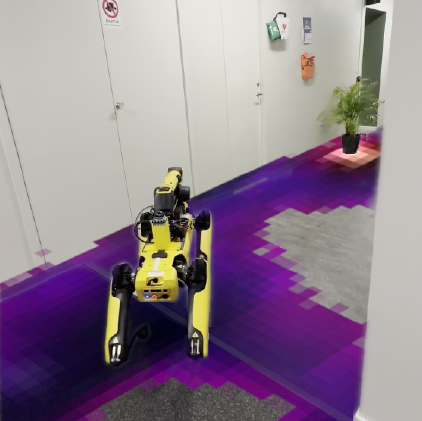
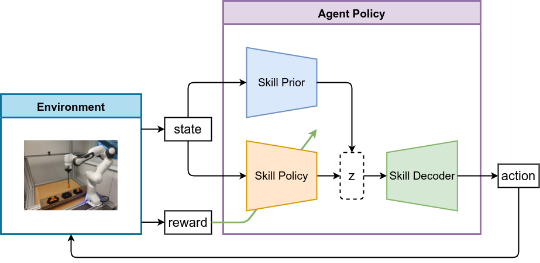
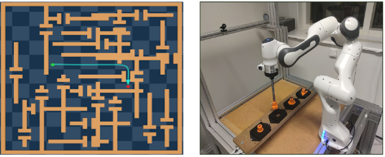

|
Quantao Yang I'm a postdoc researcher at KTH Royal Institute of Technology. I'm passionate about developing intelligent robotic agents capable of executing tasks across various real-world environments. I did my PhD in Computer Science at Örebro University, where I was advised by Todor Stoyanov and Johannes Andreas Stork. |
{kind=link}
ResearchI'm interested in robotics, reinforcement learning, imitation learning and generative AI. |
|  |
One Map to Find Them All: Real-time Open-Vocabulary Mapping for Zero-shot Multi-Object Navigation
Finn Busch, Timon Homberger, Jesús Ortega-Peimbert, Quantao Yang, Olov Andersson IEEE International Conference on Robotics and Automation (ICRA), 2025 Project Paper Code |

|
PRIME: Scaffolding Manipulation Tasks with Behavior Primitives for Data-efficient Imitation Learning
Tian Gao, Soroush Nasiriany, Huihan Liu, Quantao Yang, Yuke Zhu IEEE Robotics and Automation Letters (RA-L), 2024 Project Paper Code |
|  |
Variable Impedance Skill Learning for Contact-rich Manipulation
Quantao Yang, Alexander Dürr, Elin Anna Topp, Johannes Andreas Stork, Todor Stoyanov IEEE Robotics and Automation Letters (RA-L), 2022 Paper |
|  |
MPR-RL: Multi-Prior Regularized Reinforcement Learning for Knowledge Transfer
Quantao Yang, Johannes Andreas Stork, Todor Stoyanov IEEE Robotics and Automation Letters (RA-L), 2022 Paper |
|
Design and source code from Jon Barron's website. |